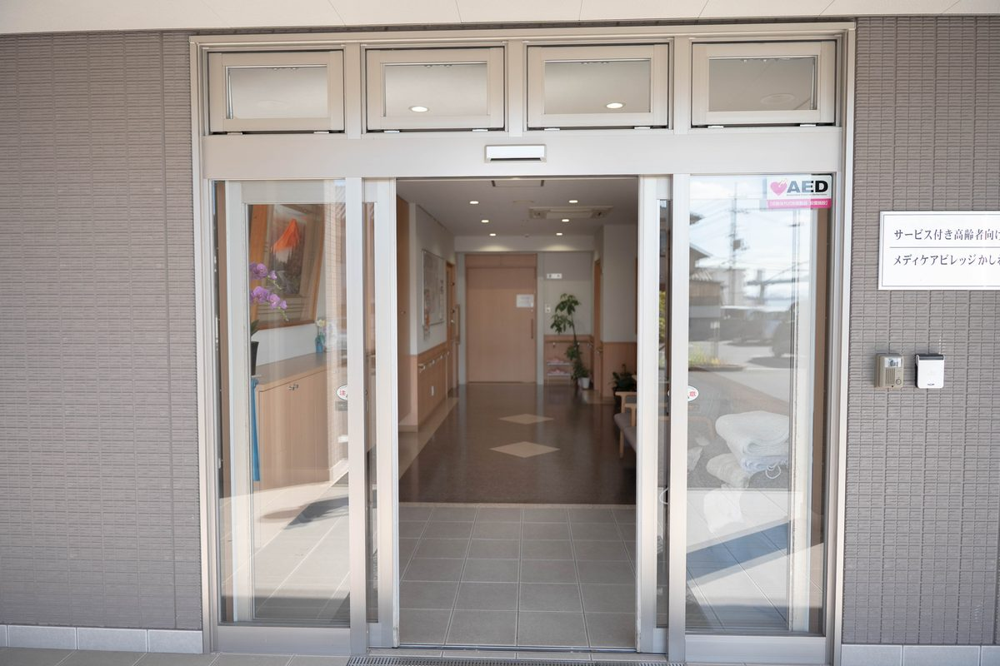

施設の見学や相談は、どこに連絡すればよいですか？
A. 回答ご相談の内容によって窓口が分かれています。迷われる場合は「かしわじま居宅介護支援センター（086-525-0600）」にお電話ください。どのサービスが合いそうかというところからご相談をお受けします。介護保険の認定をまだ受けていない段階でもかまいません。見学は事前にご連絡をいただければ、ご都合にあわせて調整します。

ご相談の内容と連絡先
| ご相談の内容 | 連絡先 | 電話 |
|---|---|---|
| どのサービスが合うかわからない 介護認定のことから相談したい | かしわじま 居宅介護支援センター | 086-525-0600 |
| 住まいのこと（入居・空室） デイサービス／訪問介護 | メディケアビレッジかしわじま こはる日和 | 086-522-8787 |
| 通い・泊まり・訪問を 組み合わせて使いたい | 小規模多機能ホーム こはる日和 | 086-522-7811 |
| 訪問診療・訪問看護 訪問リハビリテーション | いなだ医院 | 086-525-0600 |
ご相談から利用開始までの流れ
- お電話でご相談：今の状況とお困りごとをうかがいます。
- 見学・ご説明：実際にご覧いただきます。ご家族だけでの見学もできます。
- 状態とご希望の確認：必要な介助や医療的ケア、ご希望の利用日などをうかがいます。入院中の場合は病院とも調整します。
- ケアプランの作成・調整：ケアマネジャーが計画をつくります。担当がいない場合はご紹介します。
- 契約・重要事項のご説明：費用を含め、書面でご説明します。
- ご利用開始：デイサービスや小規模多機能では、体験の利用から始めることもできます。
お伝えいただけると調整が早くなること
- ご本人のお名前・年齢、要介護度（認定を受けている場合）
- 現在お住まいの場所（ご自宅・入院中・他の施設）
- 必要な介助の内容と、医療的なケアの有無
- ご希望の利用日・利用開始の時期
- 担当のケアマネジャー、かかりつけの医療機関
わかる範囲で結構です。すべて整っていなくてもお電話いただいてかまいません。
空き状況について
お部屋や利用枠の空き状況は日によって変わるため、サイトには掲載していません。お電話でおたずねください。すぐに空きがない場合も、状況をうかがったうえでご案内できることがあります。
ケアマネジャー・医療機関の方へ
退院にあわせたご相談、医療的ケアのある方の受け入れ可否のご相談をお受けしています。窓口は「かしわじま居宅介護支援センター（086-525-0600）」です。受け入れた実績のある医療的ケアの一覧もご覧ください。

場所
いなだ医院と各事業所は、いずれも倉敷市玉島柏島にあります。JR山陽本線 新倉敷駅からバスで約15分、降車後 徒歩2分です。駐車場をご利用いただけます。
- いなだ医院・かしわじま居宅介護支援センター：倉敷市玉島柏島920-106
- メディケアビレッジかしわじま・こはる日和：倉敷市玉島柏島920-14
参考にした情報
本ページは一般的な情報提供を目的としています。掲載している定員・営業日・費用などは、公表されている事業所情報をもとにしたもので、最新の内容と異なる場合があります。ご利用にあたっては必ず重要事項説明書をご確認ください。ご不明な点はお電話（086-525-0600）にてお問い合わせください。
見学のご希望、空き状況のお問い合わせをお待ちしています。
📞 086-525-0600最終更新：2026年8月26日